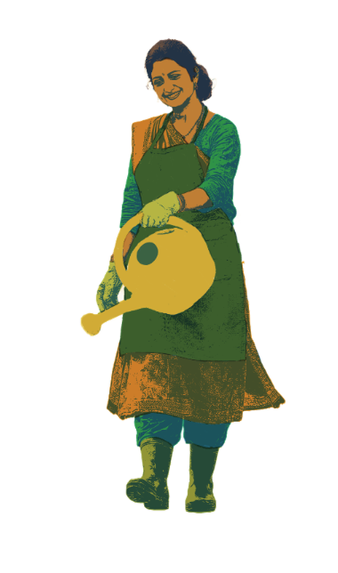
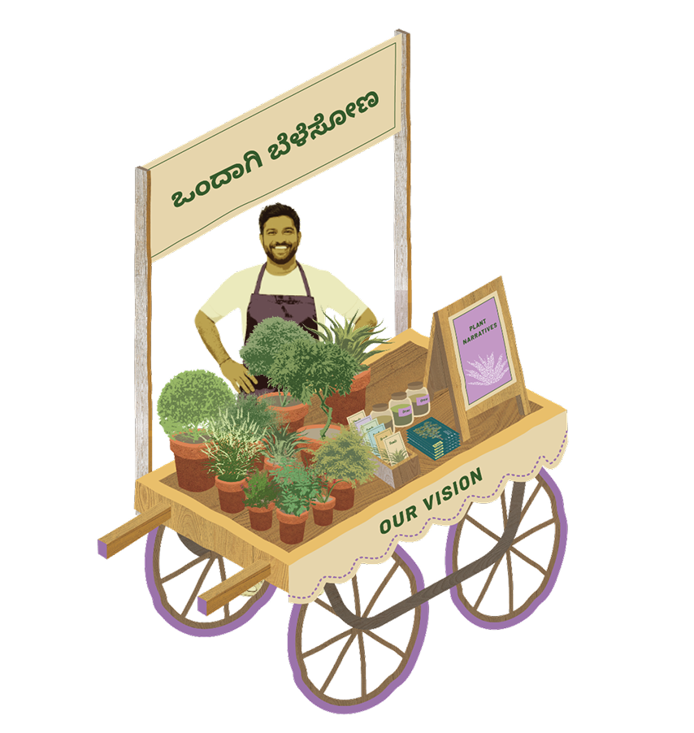
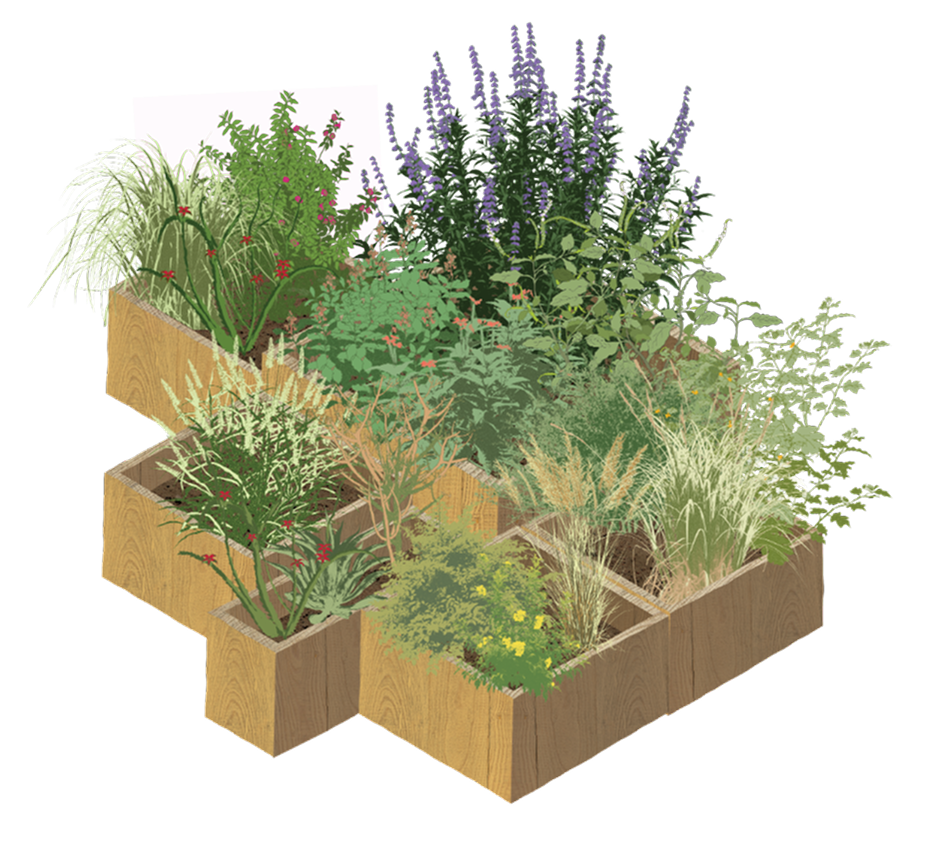
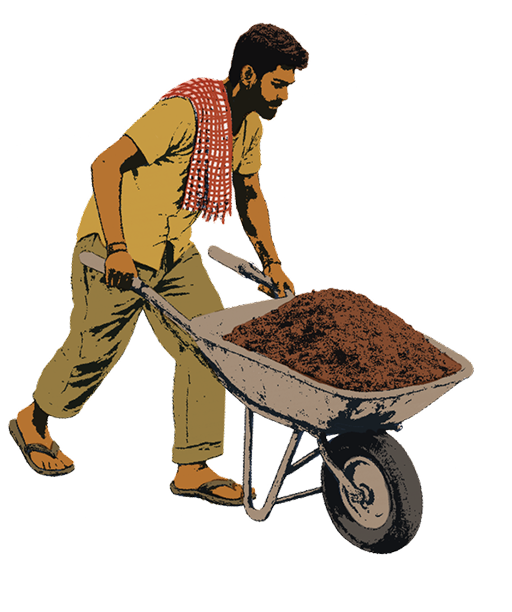
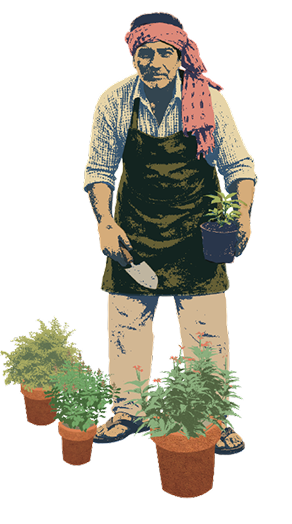
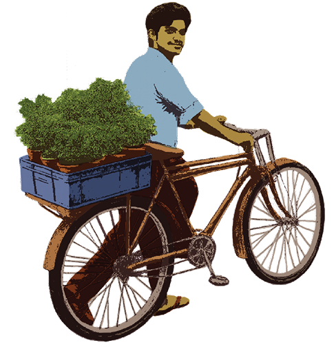
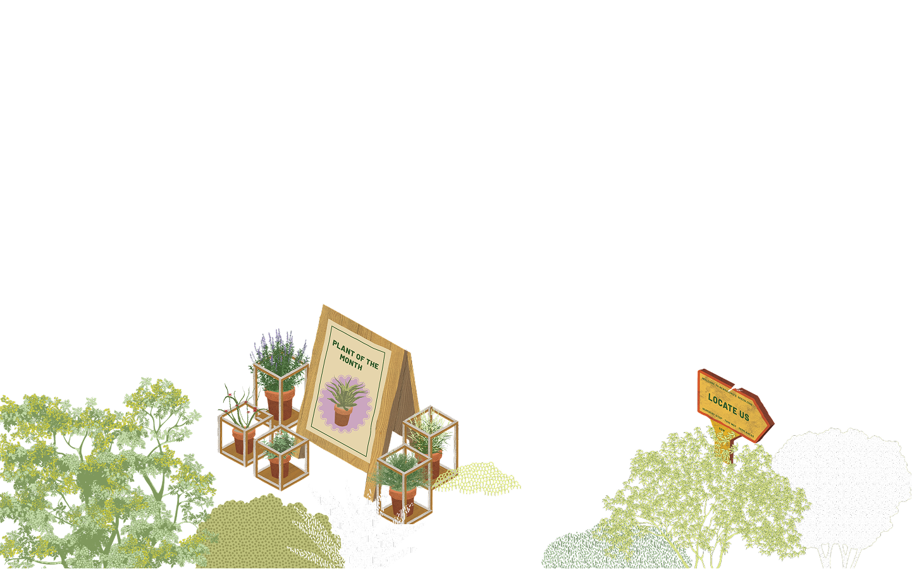







Wild plants are often seen as messy or uncontrolled. We see them differently.
Indigenous landscapes carry rhythm, resilience, and beauty - shaped by climate, soil, and
time. Our work brings these qualities into urban gardens through thoughtful design, systems
and education. Our showcase of two projects, Echo Botanica and Greens on Wheels, aim to
bring back an appreciation and build integration of 'Wild' ecologies into urbanised
landscapes.
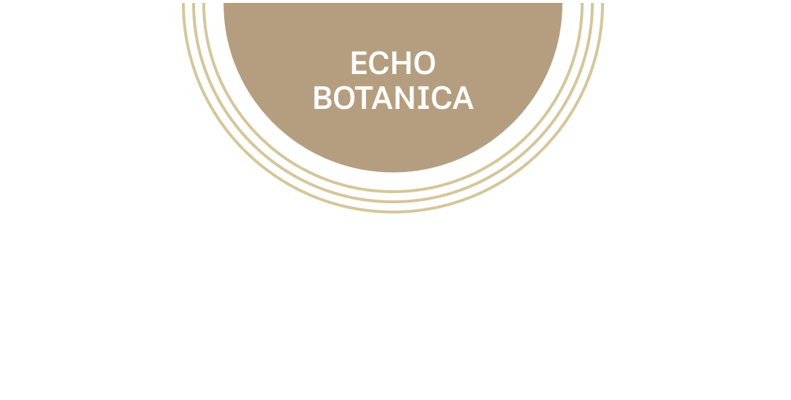
Echo Botanica is a research initiative that
seeks to democratise rewilding by
restoring participatory stewardship to
local communities. It reframes rewilding
not as nostalgia, but as a critical
rethinking of the conventional urban
garden, shifting from ornamental,
consumption-driven landscapes toward
ecologies that respond to climate stress,
biodiversity loss, and resource scarcity.
By grounding its approach in the
resilience and intelligence of indigenous
landscapes, the initiative positions
rewilding as an adaptive and forward-
looking urban practice.
The study advances a three-fold
methodology to bridge the gap between
ecological knowledge and everyday
urban implementation, integrating
research, on-ground experimentation,
and community engagement. This
approach enables ecological
understanding to move beyond theory
into nurseries, neighbourhoods, and
public spaces, fostering a sense of
commons and long-term care. Designed
to be scalable and adaptable across
regions, the framework allows diverse
contexts to reinterpret rewilding through
their local ecologies while cultivating a
shared culture of environmental
responsibility.
‘Greens on Wheels’ is a grassroots outreach initiative that
makes the research centred on the curated plants
accessible to urban consumers. Conceived as a mobile
nursery, visitors are encouraged to experience the
garden simulations and learn about these indigenous
plants. The project is conceived within ‘Echo Botanica’
and continues to advance the question of why
indigenous plants matter in our cities, making the
nursery more than a place of commerce.
We aim to foreground the ecological, cultural, and
practical value of indigenous species in urban
environments, exhibiting their integration in everyday
spaces such as frontyards, balconies, streetscapes, and
community spaces. Through workshops, demonstrations,
and informal exchanges, ‘Greens on Wheels’ shares
knowledge about planting, maintenance, and long-term
stewardship.. By combining education, mobility, and
thoughtful design, ‘Greens on Wheels’ helps make
rewilding more inclusive, practical, and achievable at
multiple scales, from individual homes to shared public
spaces.
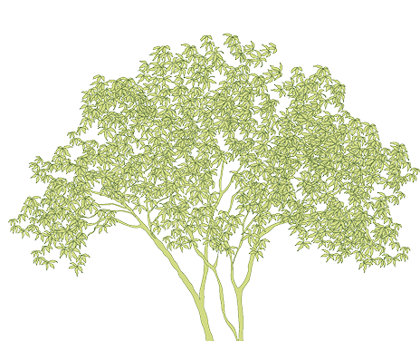
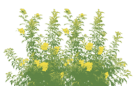
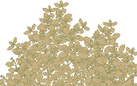
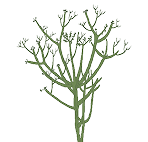
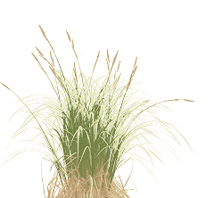
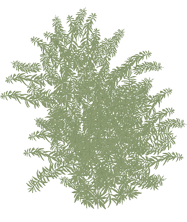
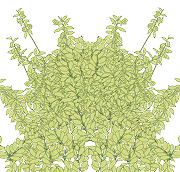
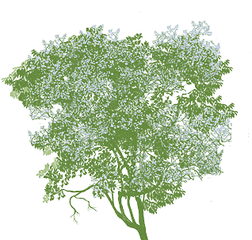
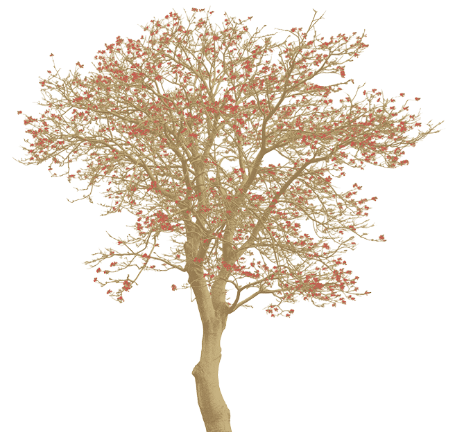
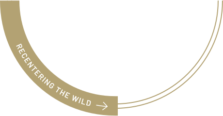
Text placeholder...
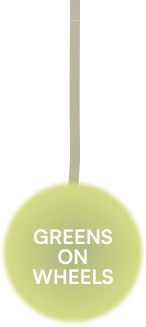
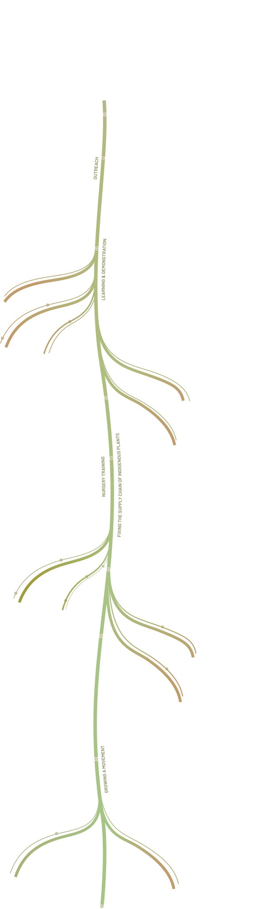
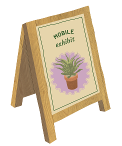
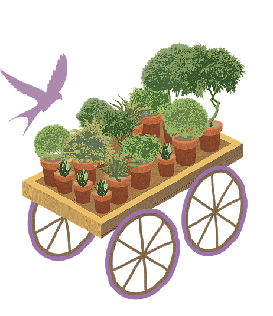
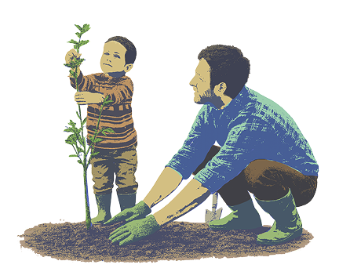
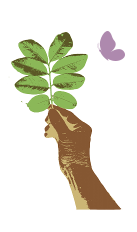
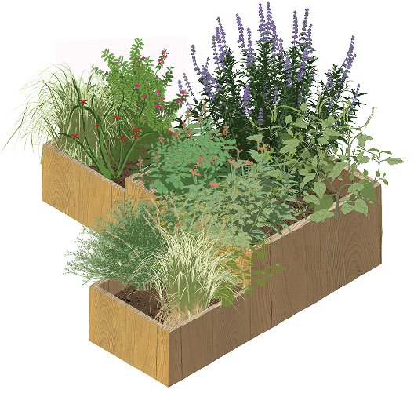
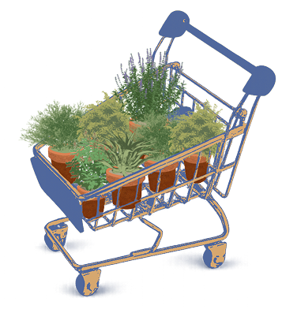
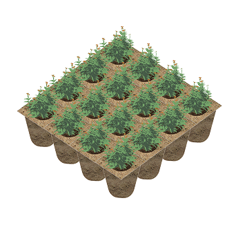
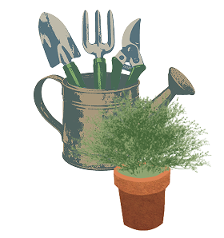
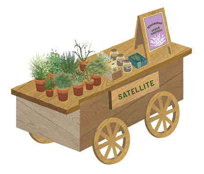
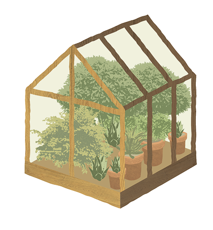
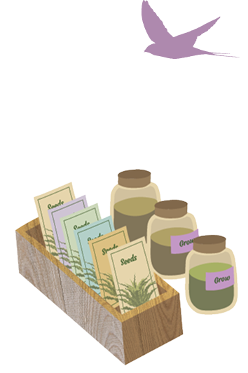